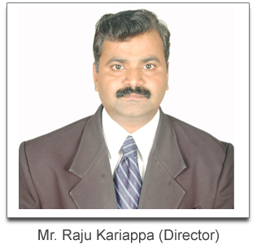

Global Expertise in process automation
Our Story
Ditap-V Automation Pvt Ltd. is promoted by team of senior technocrats & industry experts who have been successfully serving needs of plastic, food, Dairy, Pharma, Brewery, Edible oil, Starch, chemical, Sugar & Distillery Projects for last 25 years.
The objective is to provide automation expertise from concept to commissioning of process industry.
The Way We Think "We at Ditap-V believe that the best is never enough"
Committed and Creative
We are committed to delivering reliable & cost effective solutions for maximizing prosperity of our customers while expanding our sphere of operations, globally.
We endeavor to be alert to situations and pursue creative courses of action to deliver innovative, future perfect automation solutions that can withstand the test of time.
To serve global customer needs with innovative applied technologies, superior products, improved delivery cycle & products, productivity through value & quality systems for customer satisfaction.
Ditap-V provides comprehensive training in application, analysis and up-gradation to ensure that customer benefits are maximized. We provide prompt and efficient services to our clients. Clients feel assured that Ditap-V engineers will be around to help them in the moment of crisis which is the simple secret of Ditap-V getting repeated orders from India and overseas markets.
Ditap-V offers a variety of solutions to meet customer needs, our range of services includes designing customized plants, system engineering, installation & commissioning of projects. We are working with various OEM's & Consultant and work with team from the Concept to Design, supply and commissioning of the system.
Key Personnel of the Company
-

Mr. C M Kariappa - Director
-

Mr. Raju Kariappa - Director